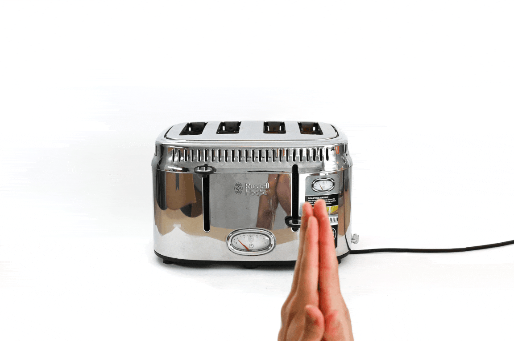

Selected Works
Here you can find a condensed portfolio of my work. Click through the images, or click a project's title to explore it in full.
Inconsiderate Domestic Objects make us more considerate by using them. This series of tools encourage emotional reflection through friction. Highlighting the ways in which domestic technologies are optimised for functions rather than humanness. The project encourages more poetic modes of habitation, helping people recognise and expel mathematical efficiency from their pockets, countertops and bedside tables. The project aims to enable new emotional behaviours, and enrich our imaginations.




Technology is increasingly determining how we act and think. This text looks at choice as framed by our operating systems (to be probabilistic, efficient, or valuable) and how that itself is a loss of imagination / agency. It is in the curiosity presided by questioning that we can be aware of the conditions under which technology’s essence has become invisible. Asking what is happening on an individual and societal level when our capacity to encounter the world begins to erode?


The mortifying ordeal of being known is becoming increasingly complex as high resolution satellites orbit the earth, as we live in close proximity to animal vision systems we do not comprehend, and interact with an increasing amount of people. If only there was a way to understand and evade how we are perceived.